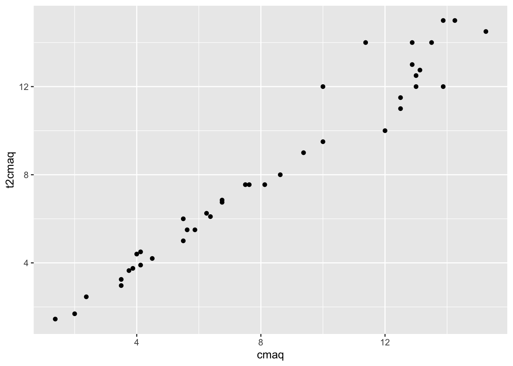

Chapter 11 Simple experiment
11.1 Two groups - Independent group design
11.1.1 Research question
How do you get children to help around the house? Theory and past research indicate that using noun words, like helper, sends a signal that the noun is part of a person’s identity. Bryan, Master, and Walton (2014) tested this in young children and found that the kids helped more when an experimenter talked to them about “being a helper” (noun condition) compared to when the experimenter talked to them about “helping” (verb condition).
11.1.2 Method
Imagine you replicated this study. You recruited 80 three-to four-year-olds from local daycare centers. Participants were randomly assigned to be in the helper condition (i.e. the noun condition) or the helping condition (i.e. the verb condition). An experimenter first talked to the children about helping.
The children in the helper condition heard: “Some children choose to be helpers. You could be a helper when someone needs to pick things up, you could be a helper when someone has a job to do, and you could be a helper when someone needs help.”
The children in the helping condition heard: “Some children choose to help. You could help when someone needs to pick things up, you could help when someone has a job to do, and you could help when someone needs help.”
Next all of the children were given toys and told they can play. While they were playing, the experimenter provided 9 helping opportunities - for example, pick up a mess, open a container, put away toys, pick up crayons that had spilled on the floor. The experimenters counted the number of times the children stop playing to help.
11.1.2.1 1. Set up - open data and load the neccessary packages.
Open the helpwords.csv data (which can be found on D2L).
After you load it into your RStudio cloud project, open the data with the IMPORT DATASET point and click method, or with this code:
Note that for the condition variable: 1 = noun - “being a helper” and 2 = verb - “helping”.
Then load the tidyverse and psych packages with this code:
11.1.2.2 2. Run descriptive statistics
Let’s first compute measures of central tendency and variability by condition. To do this we will use the describeBy() function of the psych package, which report basic summary statistics by a grouping variable.
Let’s do this here without the Tidyverse pipe (as we have in the past). Using base R, the describeBy() function takes the form of (DV, IV):
##
## Descriptive statistics by group
## group: 1
## vars n mean sd median trimmed mad min max range skew kurtosis se
## X1 1 40 5.12 1.71 5 5.06 1.48 2 9 7 0.23 -0.67 0.27
## ------------------------------------------------------------
## group: 2
## vars n mean sd median trimmed mad min max range skew kurtosis se
## X1 1 40 2.58 1.65 2.5 2.56 2.22 0 6 6 0.11 -0.98 0.26We can see that the children in the helper (noun) condition helped an average of 5.12 times (SD = 1.71, range = 2 - 9), while the children in the helping (verb) condition helped an average of 2.85 (SD = 1.65, range = 0 - 6). The results show that the minimum and maximum values are all within the range of possible values.
11.1.2.3 3. Look at data
Next let’s look at the data. Let’s first run histograms (again - by level of the IV).

The histograms show that the data in each group is roughly mound shaped, so they should meet the assumption of normality (this will be tested next), and that there are no outliers.
11.1.2.4 4. Stats
First test normality with a Shapiro-Wilk test:
helpex %>%
group_by(condition) %>%
summarise(statistic = shapiro.test(numhelp)$statistic,
p.value = shapiro.test(numhelp)$p.value)## # A tibble: 2 x 3
## condition statistic p.value
## <dbl> <dbl> <dbl>
## 1 1 0.961 0.179
## 2 2 0.945 0.0510A significant test of normality (Shapiro-Wilk test) indicates that the data is not normally distributed. With non-normal data, a Wilcoxon-Mann-Whitney U test should be used, which is a nonparametric alternative to the independent-sample t-test.
Then test the equality of the group variances with a Levene’s test. Remember that the levene test uses the car package, so let’s first load that package.
## Levene's Test for Homogeneity of Variance (center = median)
## Df F value Pr(>F)
## group 1 0.0519 0.8204
## 78A significant test of equality of variance (Levene’s test) means that group variances are different from each other, and in the next step you should account for the unequal variances by using the Welch t-test option.
Then let’s unload the car package becuase it can interver with the tidyverse and psyc packages.
In this example, the test of normality and equality of variance were both nonsignificant. This means that in the next step you should use a Student’s t-test, which assumes that group data are normally distributed and that variances are equal.
Next use the t-test function to find the CI and NHST with this base R code:
##
## Two Sample t-test
##
## data: numhelp by condition
## t = 6.788, df = 78, p-value = 1.989e-09
## alternative hypothesis: true difference in means is not equal to 0
## 95 percent confidence interval:
## 1.802115 3.297885
## sample estimates:
## mean in group 1 mean in group 2
## 5.125 2.575The results show that the 95% CI is 1.802115 to 3.297885, which means that the true difference in the number of words remembered based on the level of processing is likely to be between about 1.5 and 3 helping behaviors.
The results also report that t = 6.788, df = 78, p-value = 1.989e-09 - so the difference is statistically significant.
Next find the effect size using the effsize package with this code:
##
## Cohen's d
##
## d estimate: 1.517847 (large)
## 95 percent confidence interval:
## lower upper
## 1.012631 2.023064The cohen’s d is 1.5, which is a large effect. The 95% CI is 1.012631 to 2.023064, which is pretty big - reflecting a degreee of uncertainity about the true effect size.
We could also run a scatterplot to see the mean and degree of overlap of data.
11.1.2.5 5. APA-stye write up
Children in the helper condition (M = 5.12, SD = 1.71) helped more than those in the helping condition (M = 2.85, SD = 1.65).
Therefore, the average difference in the number of words recalled between the groups was 2.55 helping behaviors. The 95%CI on this difference was 1.80 to 3.30 helping behaviors. This CI means that the true difference in the number of words remembered based on the level of processing is likely to be between about 1.5 and 3 helping behaviors.
The standardized effect size of the difference between deep and shallow processing was d = 1.52 (CI.95: 1.01 to 2.02). This effect would be classified by Cohen’s conventions as large. These 95%CIs do not contain zero, so we can conclude that the difference between the two conditions is statistically significant (t(78) = 6.79, p < .001).
11.2 Two groups - Dependent group design
11.2.1 Research question
Do fidget spinners help you concentrate? Soares and Storm (2019) asked college-aged student to watch an educational video with and without a fidget spinners. They found that participants remembered more information about the video they watched without the fidget spinner than the video they watched with it.
11.2.2 Method
Imagine you replicate Soares and Storm (2019) with a convenience sample of 20 classmates and friends. Participants watched two educational videos about lesser known historical figures. Each video was about 10 minutes. Participants were run individually.
The order of the conditions was counterbalanced across participants so that half of the participants were given the fidget spinner while watching the first video and not the second video. The other half of the participants watched the first video without the fidget spinner and were given the fidget spinner for the second video.
After each video participants completed an unrelated task for 5 minutes and then were given a 15 item fill in the blank test about the video content.
11.2.3 Data analysis
You should first open the data in R. Then you should get to know your data by using graphs to look at the data and running descriptive statistics. Next you should calculate the confidence interval, effect size, and null hypothesis significance test (NHST).
11.2.3.1 Open data and load the neccessary packages.
Then open the data, which is in fidget.csv on D2L.
After you load it into your RStudio cloud project, open the data with the IMPORT DATASET point and click method, or with this code:
Note the layout of the data here. Let’s use the head() function to look at the first 3 rows of the dataset:
## # A tibble: 3 x 3
## id wofid wfid
## <dbl> <dbl> <dbl>
## 1 1 6 3
## 2 2 15 4
## 3 3 9 3Remember that in a spreadsheet, each row typically represents an individual participant in the study. So, with a within subject design, the IV data will be split into to columns. In this example the wfid is the test scores for the video watched with the fidget spinner and the wofid is the test scores for the video watched without the fidget spinner.
A column with the difference between the two levels of the IV is needed for within subject data analysis. So, let’s create it now using the mutate() function (which is part of the tidyverse package)
## # A tibble: 3 x 4
## id wofid wfid diff
## <dbl> <dbl> <dbl> <dbl>
## 1 1 6 3 3
## 2 2 15 4 11
## 3 3 9 3 6The first participant scored a 6 on the test about the video he/she watched without the fidget spinner and a 3 on the test of the video watched with the fidget spinner. The difference between the scores is 3 points.
11.2.3.2 Descriptive statistics and assumptions
Let’s first compute measures of central tendency and variability.
## vars n mean sd median trimmed mad min max range skew kurtosis se
## wofid 1 20 10.55 3.25 10.5 10.62 3.71 5 15 10 -0.17 -1.39 0.73
## wfid 2 20 5.60 3.36 6.5 5.69 4.45 0 10 10 -0.22 -1.49 0.75We can see that the children in the helper (noun) condition helped an average of 5.12 times (SD = 1.71, range = 2 - 9), while the children in the helping (verb) condition helped an average of 2.85 (SD = 1.65, range = 0 - 6). The results show that the minimum and maximum values are all within the range of possible values.
First test normality of the difference scores with a Shapiro-Wilk test:
##
## Shapiro-Wilk normality test
##
## data: fidex$diff
## W = 0.97287, p-value = 0.8139A significant test of normality (Shapiro-Wilk test) indicates that the data is not normally distributed. With non-normal data, a Paired Samples Wilcoxon test should be used, which is a nonparametric alternative to the related-sample t-test.
In this example, the test of equality of variance is nonsignificant. This means that in the next step you should use a Student’s t-test, which assumes that group data are normally distributed.
11.2.3.3 Stats
Use the t-test function to find the CI and NHST with this base R code:
t.test(fidex$wofid, fidex$wfid, paired = TRUE)
- The within-subjects t-test uses the same t.test() function as you did with independent samples. However, this time you have to use the form of: level1, level2
- I also think you have to direct R to the variable with the $ method (I could not get this to run with the data = )
- The paired=TRUE tells r that it is a within subjects design
The results show that the 95% CI is 2.910114 to 6.989886, which means that the true difference in the number of correct test questions remembered based on fidget spinner use is likely to be between about 3 and 7 correct questions.
The results also report that t = 5.0789, df = 19, p-value = 6.667e-05 - so the difference is statistically significant.
Next find the effect size using the effsize package. Here is the code:
library(effsize)
cohen.d(fidex$wofid, fidex$wfid, paired=TRUE)
- Again, with within-subjects the cohens.d function takes the form of: level1, level2
- The
paired=TRUEtells r that it is a within subjects design
The effect size is 1.496451, which is large. The 95% CI is 0.6280516 to 2.3648508, suggesting there is a high level of uncertainity in the size of the effect here.
11.2.3.4 5. APA-style write up
Participants remembered more information about the video they watched without the fidget spinner (M = 10.50, SD = 3.25) compared to the video that they watch with the fidget spinner (M = 5.60, SD = 3.36).
Therefore, the average difference in the number of correct test questions between the groups was 4.9 questions. The 95%CI on this difference was 2.91 to 6.99 correct questions. This CI means that the true difference in the number of correct test questions remembered based fidget spinner use is likely to be between about 3 and 7 correct questions.
The standardized effect size of the difference between test score without and with fidget spinners was d = 1.50 (CI.95: 0.63 to 2.36). This effect would be classified by Cohen’s conventions as large.
These 95%CIs do not contain zero, so we can conclude that the difference between the two conditions is statistically significant (t(19) = 5.08, p < .001).
ADD BONUS MATERIAL?
11.3 More than two groups - Independent group design
11.3.1 Research question
Does the method of note-taking influence test performance? Mueller and Oppenheimer (2014) report that
Morehead, Dunlosky, and Rawson (2019) conducted a replication plus extension of Mueller and Oppenhiemer’s (2014) study.
They posted their data (https://osf.io/dyga5/?view_only=843c2187b4894aefbfc6218b2d6eaed4)
11.3.2 Method
They recruited 193 undergraduate students to participate in their study for course credit. Following the procedure of Mueller and Oppenhiemer (2014) participants watched TED talks on uncommon topics.
11.3.3 Data analysis
11.3.3.1 Open data and load the neccessary packages.
Then open the data, which is in Jamesetal.csv on D2L. OR LINK?
After you load it into your RStudio cloud project, open the data with the IMPORT DATASET point and click method, or with this code:
Here is the codebook LINK.
11.3.3.2 Test the assumptions
Then load the tidyverse and psych packages with this code:
11.3.3.3 Descriptive and test assumptions
Let’s first compute measures of central tendency and variability by condition. To do this we will use the describeBy() function of the psych package, which report basic summary statistics by a grouping variable.
Let’s do this here without the Tidyverse pipe (as we have in the past). Using base R, the describeBy() function - which takes the form of (DV, IV):
##
## Descriptive statistics by group
## group: 1
## vars n mean sd median trimmed mad min max range skew kurtosis se
## X1 1 32 0.3 0.18 0.3 0.3 0.15 0 0.75 0.75 0.33 -0.22 0.03
## ------------------------------------------------------------
## group: 2
## vars n mean sd median trimmed mad min max range skew kurtosis se
## X1 1 31 0.25 0.14 0.25 0.24 0.15 0 0.55 0.55 0.32 -0.69 0.03
## ------------------------------------------------------------
## group: 3
## vars n mean sd median trimmed mad min max range skew kurtosis se
## X1 1 31 0.26 0.16 0.25 0.26 0.15 0 0.55 0.55 0.28 -1.1 0.03Create histograms
ggplot (notetaking, aes (x=Test1Tot)) +
geom_histogram(binwidth = .1) +
facet_wrap(~as.factor(method))## Warning: Removed 94 rows containing non-finite values (stat_bin).
The histograms show that the data in each group is roughly mound shaped, so they should meet the assumption of normality (this will be tested next), and that there are no outliers.
11.3.3.4 Stats
We will use a one way ANOVA to test for difference test performance based on the way in which participants took notes.
In R we can do this with the aov() function, which is part of base R. Similar to the multiple regression, we have to save the ANOVA as an object. Then we will use the summary.aov() to see the results of the ANOVA.
DO I NEED MORE DETIAL HERE?
## Df Sum Sq Mean Sq F value Pr(>F)
## method 1 0.024 0.02397 0.933 0.337
## Residuals 92 2.364 0.02569
## 94 observations deleted due to missingnessThe results show that the p-value associated with the F-value is greater than .05 - failing to reject the null (the null here is that all of the group means are the same). This means that there is no difference in test performance.
11.4 More than two groups - Dependent group design
could add another condition to the last example…. replication plus extension